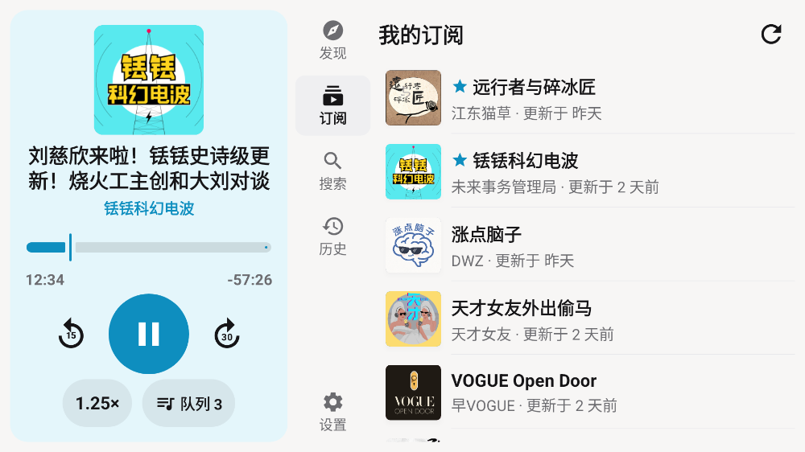
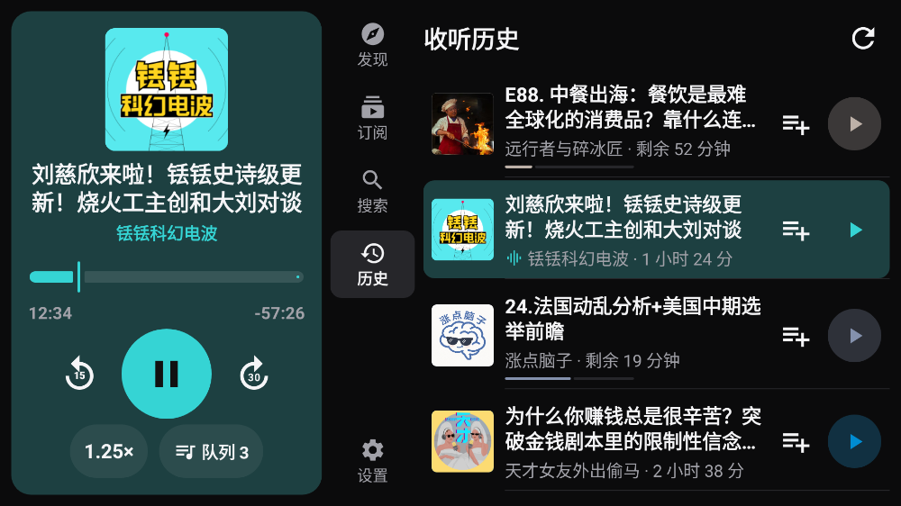
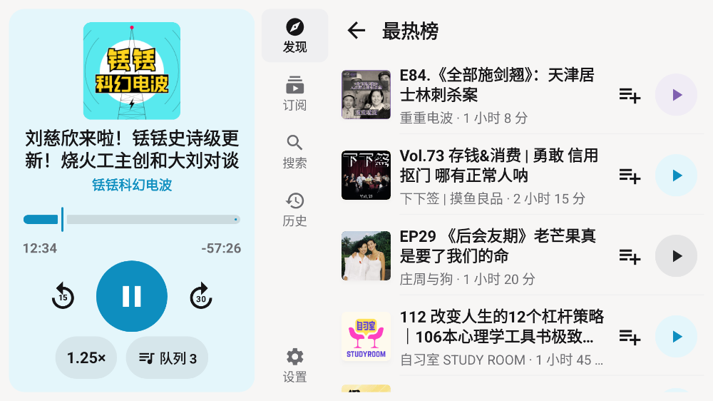
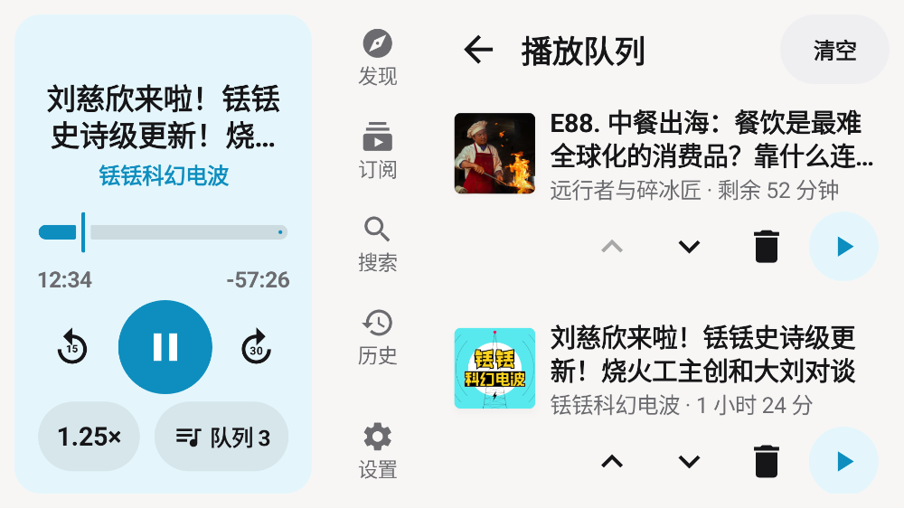
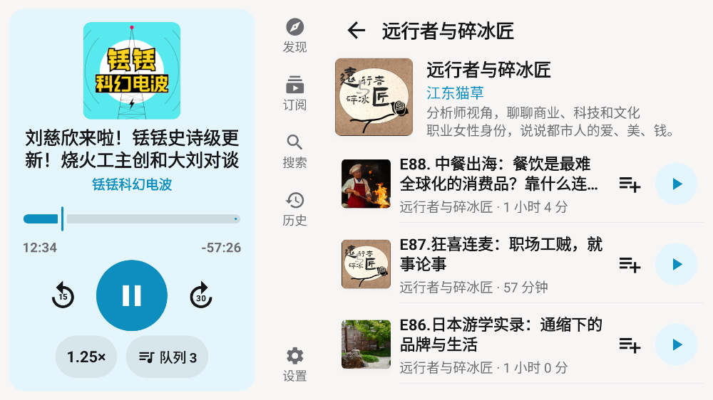
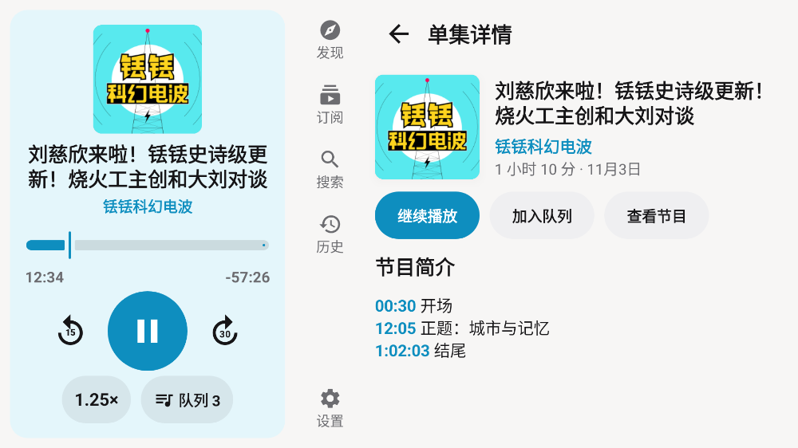
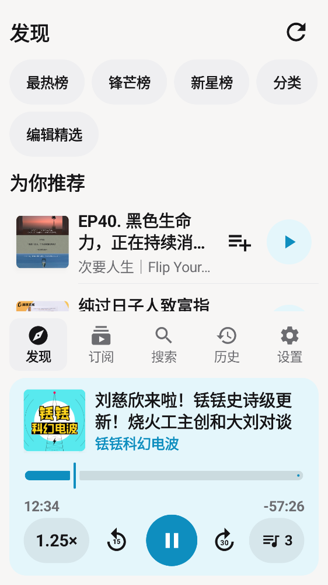

小宇宙车机版 0.0.1 · 界面截图
本地渲染（Paparazzi，不需要模拟器），用真实公开内容和真实封面。横屏 1920×1080 / 竖屏 1080×1920。这些图是用 App 的同一套组件拼出的页面，不是运行中 App 的截屏；完整交互以云端真机测试为准。










本地渲染（Paparazzi，不需要模拟器），用真实公开内容和真实封面。横屏 1920×1080 / 竖屏 1080×1920。这些图是用 App 的同一套组件拼出的页面，不是运行中 App 的截屏；完整交互以云端真机测试为准。






